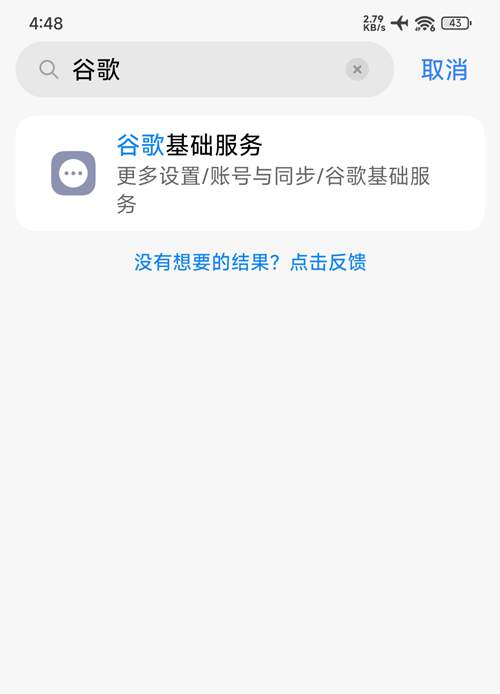
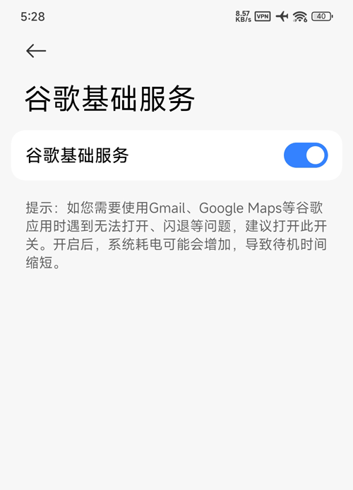
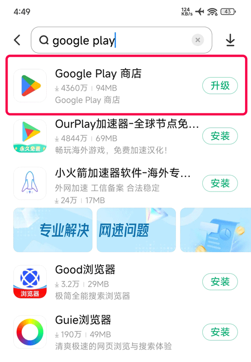
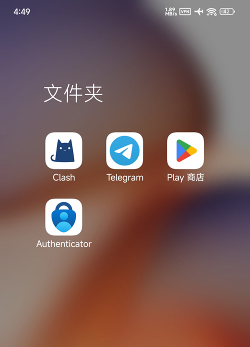
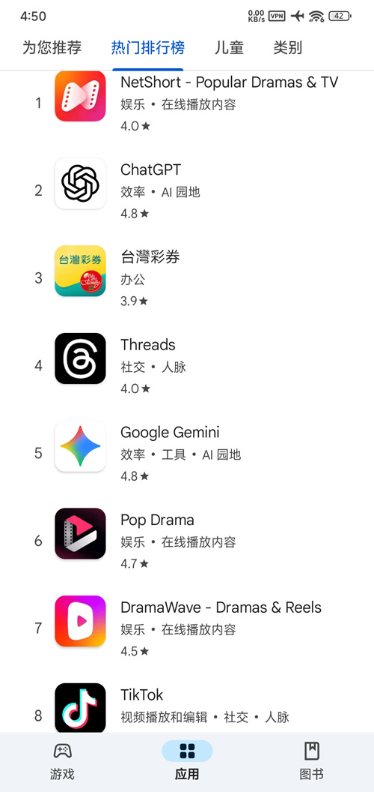

谷歌三件套是指：
Google 服务框架 (Google Services Framework)
Google Play 服务 (Google Play Services)
Google Play 商店 (Google Play Store)
大多数小米/Redmini手机内置 Google Play 直接开启即可
步骤：
1、小米/Redmi手机进入【设置】→ 搜索“谷歌”→ 点击“谷歌基础服务”→ 开启“谷歌基础服务”
2、打开小米应用商店搜索“google play”→ 找到 Google Play 商店，点升级即可
打开设置，搜索谷歌





若设置中找不到上述选项，可尝试使用第三方安装工具：
谷歌安装器 APK：从可靠的第三方站点（如 Uptodown 或 APKMirror）下载并安装 "Google Installer"。
一键修复：打开应用后点击“一键安装”或“开始修复”，系统会自动按顺序下载并安装：
Google 服务框架 (Google Services Framework)
Google Play 服务 (Google Play Services)
Google Play 商店 (Google Play Store)
网络环境：安装完成后，登录 Google 账号和使用商店必须具备可访问国际互联网的网络环境。
清除缓存：若安装后无法打开或报错，可尝试在「设置」->「应用设置」中找到 Google Play 商店，执行「清除所有数据」和「强行停止」后再试。
账号登录：若提示“设备未获得认证”，可能需要移除并重新添加 Google 账号，或更新至最新的系统版本。